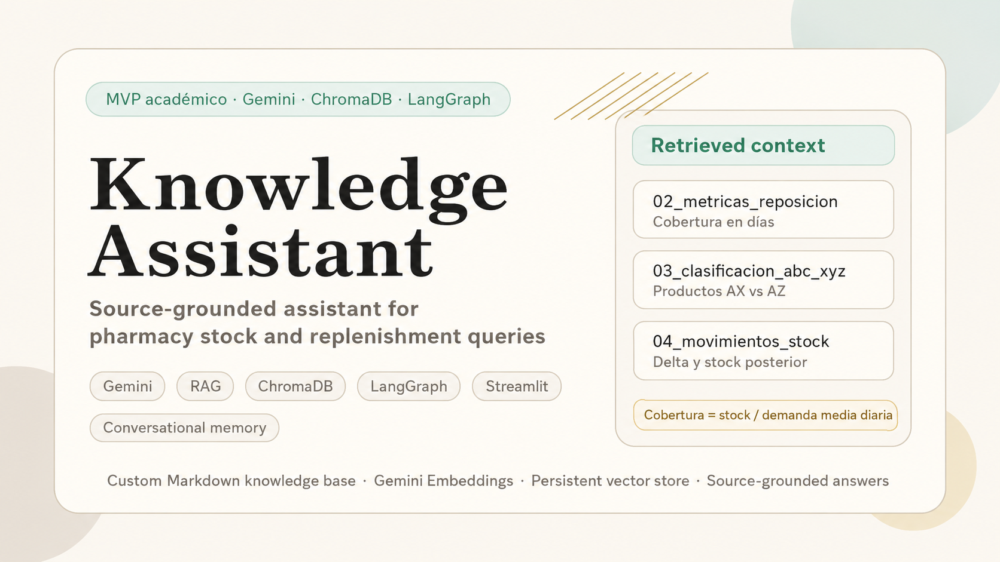

Knowledge Assistant — RAG Agent
RAG-based assistant designed to answer pharmacy stock and replenishment questions from curated project knowledge sources.

What this project shows
- A domain-specific GenAI assistant built around a controlled pharmacy inventory knowledge base.
- Retrieval-Augmented Generation using Gemini Embeddings and a persistent ChromaDB vector store.
- A LangGraph agent with a clear retrieval-generation flow and conversational memory.
- A Streamlit demo interface that exposes answers and retrieved sources without changing the core architecture.
Domain boundaries
- No clinical advice or treatment recommendation.
- No real patient, provider, sales or pharmacy-identifiable data.
- No automatic purchase decisions.
- If the retrieved context is insufficient, the assistant must say so clearly.
Architecture
The system follows an end-to-end RAG pipeline. The knowledge base is written in Markdown, enriched with YAML metadata, split into sections and chunks, embedded with Gemini and persisted in ChromaDB. At inference time, the retriever selects relevant chunks, LangGraph orchestrates the flow and Gemini generates the final answer.
Four custom Markdown documents covering stock fundamentals, replenishment metrics, ABC/XYZ classification and stock movement interpretation.
Gemini Embeddings transform chunks into vectors and ChromaDB retrieves the most relevant context using similarity search with k=4.
LangGraph coordinates retrieve_context → generate_answer, while MemorySaver keeps conversational context by thread.
Validated demo questions
- What is the difference between stock rotation and stock coverage?
- If a product has 24 units and sells 3 units per day, what is the approximate coverage?
- What is the difference between an AX and an AZ product?
- If previous stock was 5 and posterior stock is 12 after a manual modification, how should it be interpreted?
- What medicine would you recommend for a cold? The agent rejects this as out of domain.
Implementation highlights
- 117 indexed chunks after excluding low-information question sections from retrieval.
- Persistent ChromaDB collection:
farmastock_ai_docs. - LLM:
gemini-2.5-flashwith low temperature for stable answers. - Streamlit interface with suggested questions, retrieved-source expanders and a clear safety banner.
Why it matters
This project connects a pharmacy background with modern GenAI engineering. Instead of building a generic chatbot, the assistant is constrained to a narrow operational domain and uses a curated knowledge base to produce safer, more traceable answers.
Next improvements
Future extensions could include a synthetic product dataset, a formal RAG evaluation set, a domain-classification node before retrieval and more integrated source citations inside the final response.
Related FarmaStock AI project
This RAG assistant is part of a broader FarmaStock AI project ecosystem. A complementary end-to-end data science project focuses on pharmacy stock reconstruction, demand forecasting and explainable replenishment recommendations using Nixfarma data.